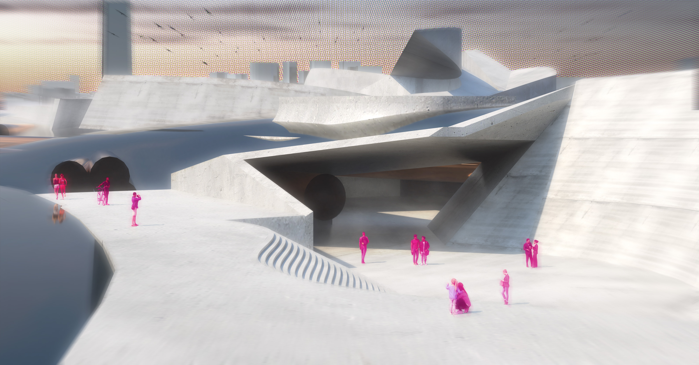

Propter Machinam // "because of the machine"
by Langdon Drewett
In our digital era, we have incorporated our devices into our sense of self, biologically entangling us with massive systems of unseen digital infrastructure. This provides immense power to the corporate entities in control of these systems, leveraged through censorship and agenda-algorithms. The introduction of new narratives on online platforms has exposed this bias, but also fueled obstinate ideological warfare. This architectural thesis seeks to provide agency through greater understanding of the phenomenon via a scheme of stacked networks. The top layer consists of a constructed landscape, allowing for casual public use while providing access opportunities. Next, a network of circulation provides pathways between narrative nodes, where users will construct different perceptions of a given event. Finally, the bottom layer allows users to see the how the narrative network relates to topics of decontextualization, digital infrastructure, and discourse through a variety of programs.
Parametric Network-Derived Plan
// a parametric script generates nodal geometry from a simple line Network
Network Plan
// parametric output is sculpted into architectural form

Sections
// figure ground sectional studies, revealing network stacking
Immersive Views
// physically experiencing network, human data flows
